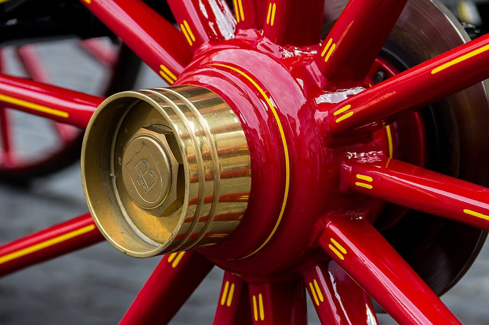
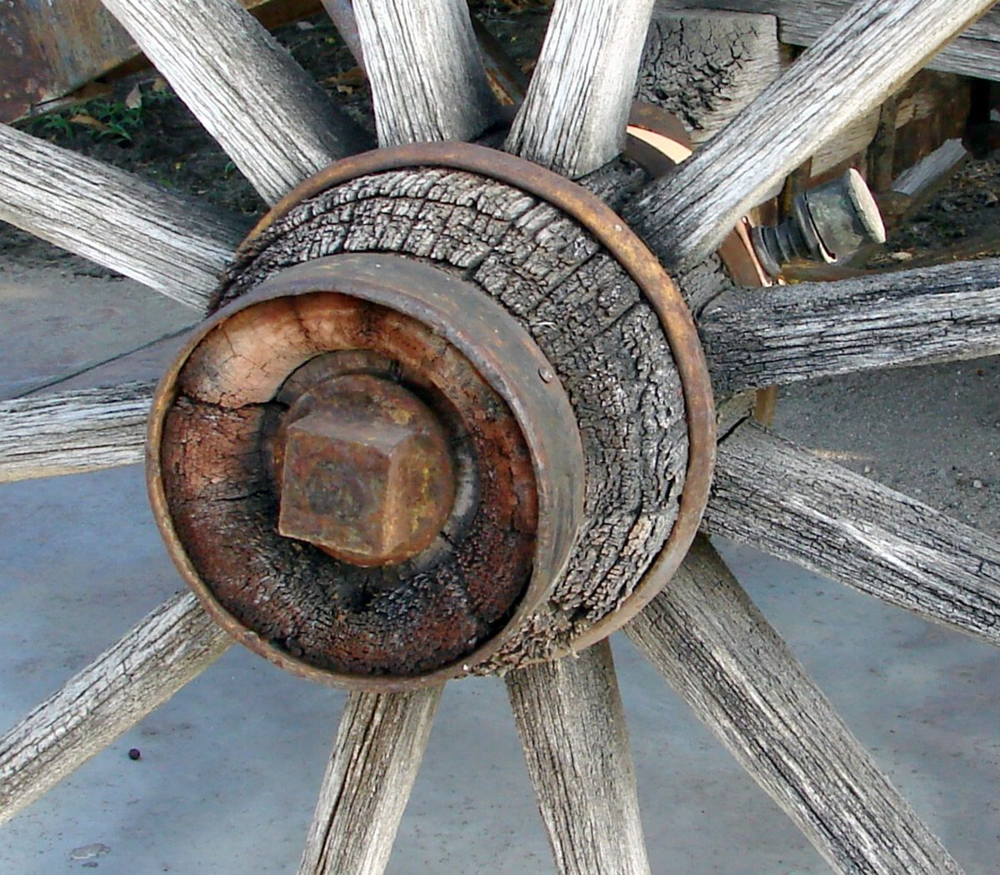
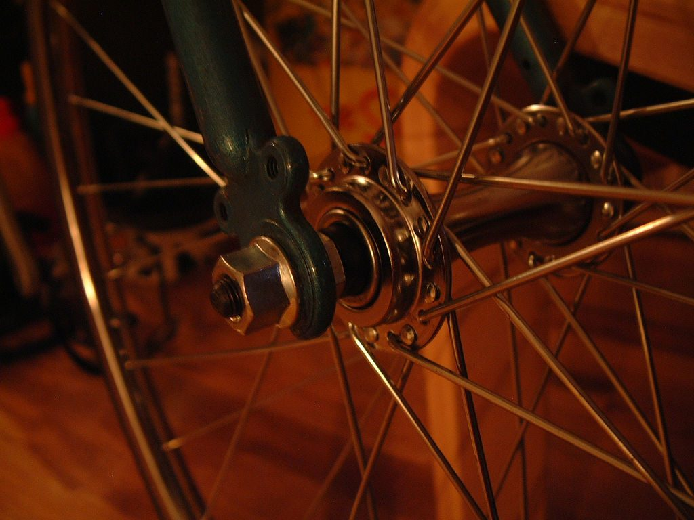
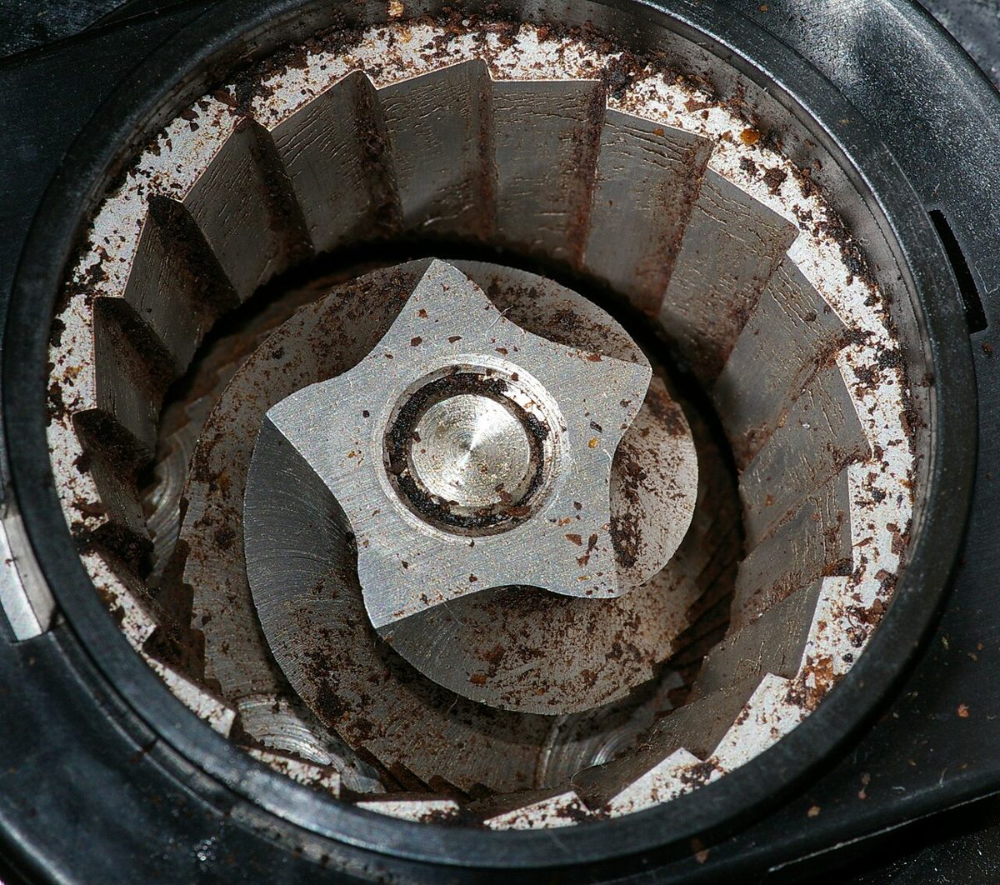
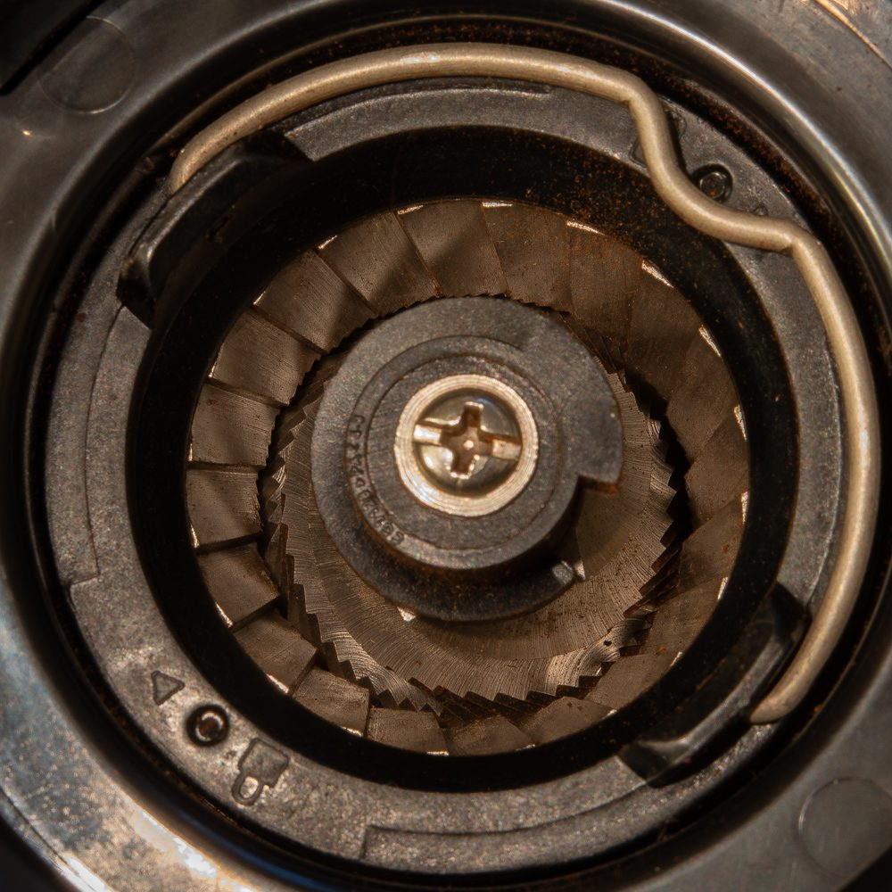
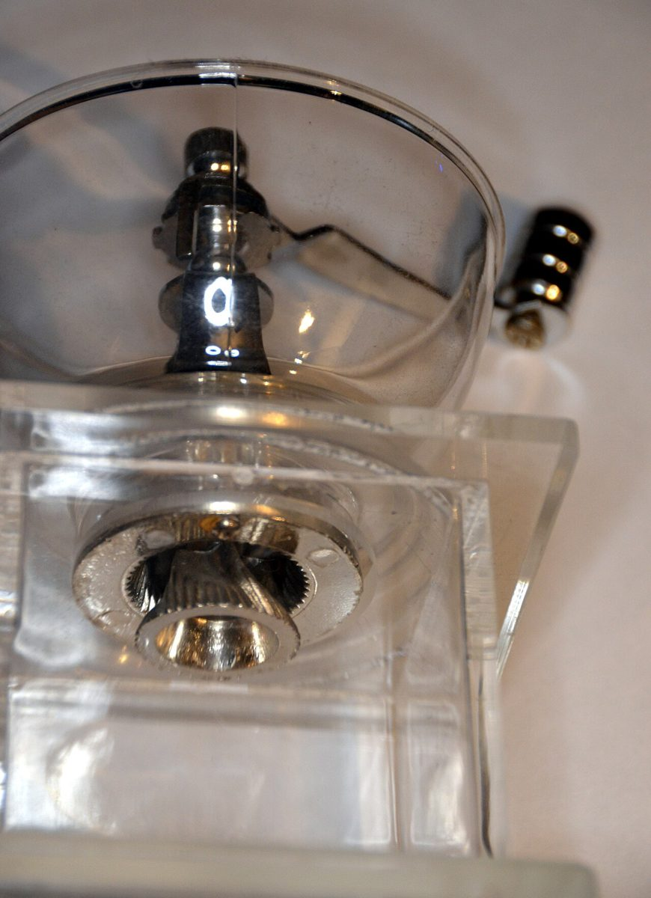

制作側の連想
ハブ(車輪の中心)とスポーク。
店名の由来は分かりません。制作側は「HUB」という語から、車輪の中心(ハブ)と、そこから放射状にのびるスポークを連想しました。5ページを1周360°の5本のスポークに見立て、72°ずつ回してめぐる作りにしています。「制作側の連想」であり、お店の理念・由来とは無関係です。
ハブのアップ(イメージ)
中心に集まる、いろいろなハブ。
写真はお店のものではなく、国外または撮影地不明のフリー素材です。




放射のかたち(イメージ)
ミルの刃も、中心から外へ。



ご案内
お店のこと(確認できたものだけ)
| 所在地 | 〒989-0276 宮城県白石市大手町3-1 |
|---|---|
| 電話 | なし |
| 営業時間 | 準備中 |
| 定休日 | 準備中 |
| ご予約 | 準備中 |
| 駐車場 | 準備中 |
| SNS | Instagram @angle.coffee.hub |